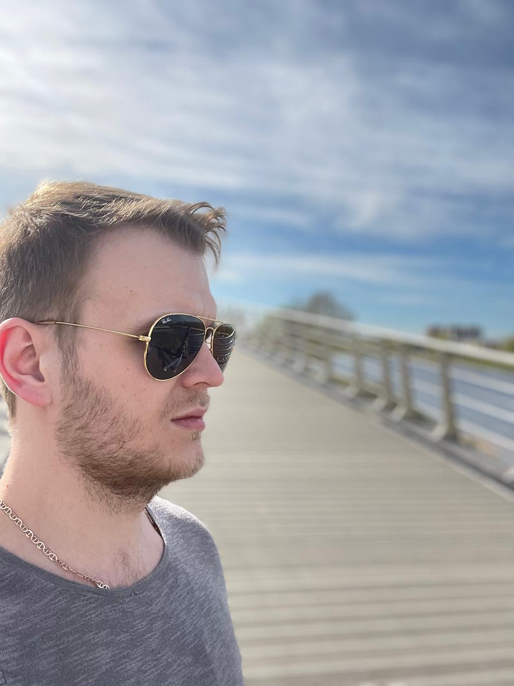
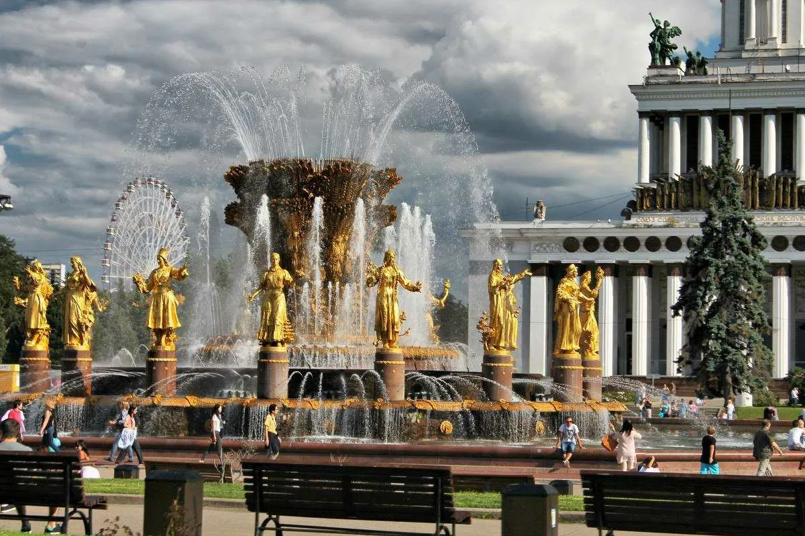
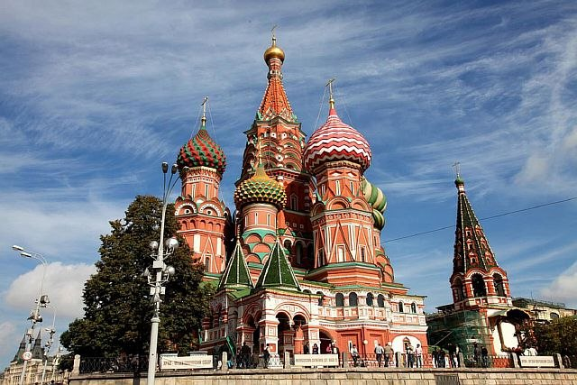
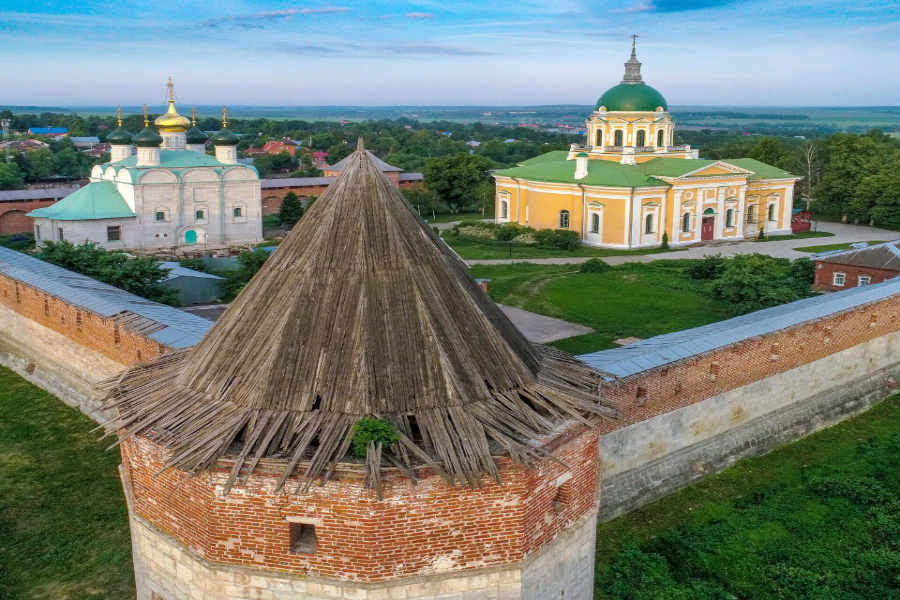
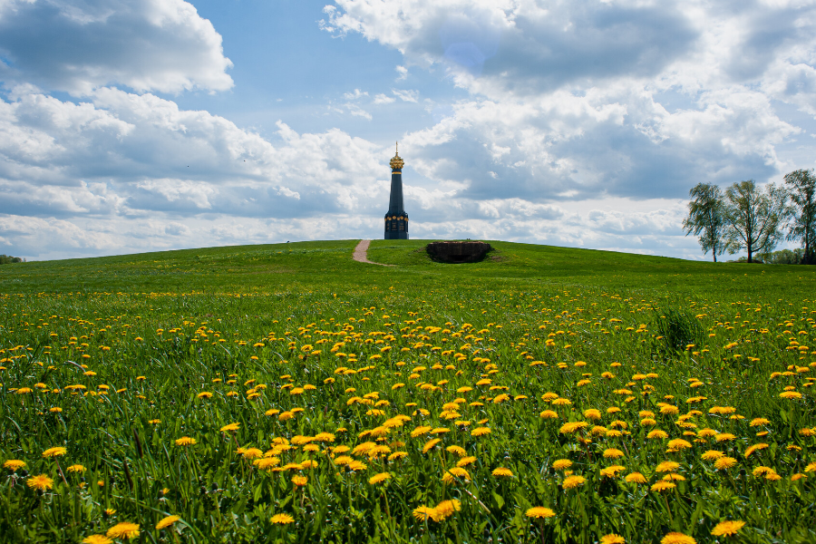

Константин Мосунов
Добрый день! Хотел бы рассказать несколько слов о себе.
Мне 30 лет и являюсь студентом академии "Факт". Также имею высшее образование по профилю
"Производственный менеджмент". Долгое время владел и руководил небольшой компанией, занимающейся
обслуживанием частной недвижимости.
У меня 3-ое детей и счастливая семья!
Хотел бы оставить небольшой отзыв по пройденному материалу, на текущий момент. Вводный курс я
прошел и вопрос практически не возникало.
Т.к. с HTMl я сталкивался еще в школе, основные проблемы это синтаксис и ошибки связанные с этим, но в
целом
все ясно. После просмотра записи встречи, тоже особых вопросов нет, кроме ощущения выполнения задания с
помощью "костылей". В общем перед началом курса было страшней)
Достопримечательности Москвы

Фонтан "Дружбы Народов" на ВДНХ

Собор Василия Блаженного

Царь-Пушка

Московский Кремль
Достопримечательности Московского региона

Ново-Иерусалимский монастырь

Приокско-Террасный заповедник

Зарайский кремль

Музей Бородино